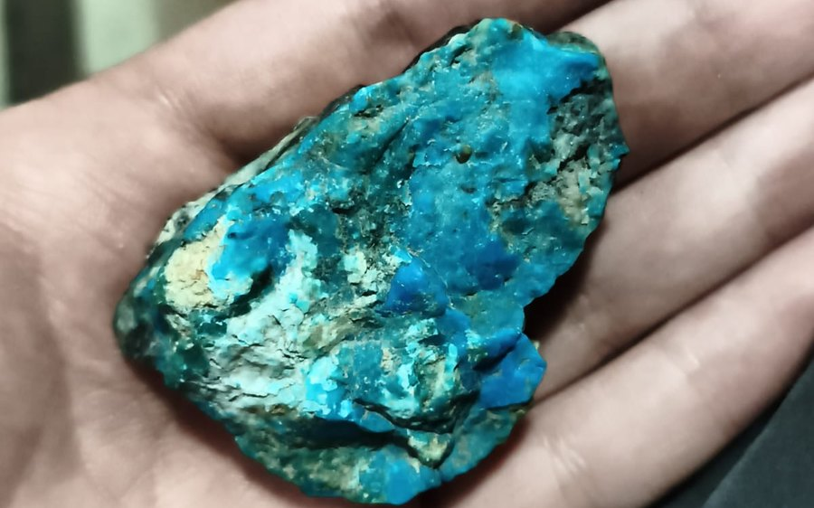

Crisocola $7.500Crisocola
(Cu,Al)₂H₂Si₂O₅(OH)₄ · nH₂ONo es un cristal: es un mineraloide de cobre, sin estructura cristalina definida. Verde y azul, con vetas que no se repiten. Cuanto más intenso el verde, mejor la pieza.
- Peso
- 57,75 g
- Tamaño aprox.
- 5,5 × 4 × 2 cm
- Origen
- Chile